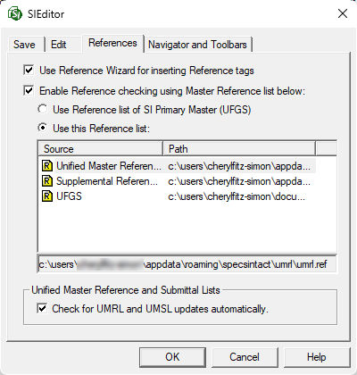

This command can be executed from the SI Editor's Tools menu.
The References tab in the Options window allows the customization of the SI Editor's configuration settings.

Main Settings
- Use Reference Wizard for inserting Reference tags: Check this option to insert Reference tags by automatically populating the REF, RID, RTL, and ORG tags with the corresponding information from the Reference Wizard. This option automatically launches the Reference Wizard when you insert any of these tags via the Tagsbar buttons or the Insert menu > Tags. The Reference Wizard uses the connected Masters and the Supplemental Reference List as Reference sources.
- Enable Reference checking using Master Reference list below: When checked, mouse-over descriptions for RID tags will first be searched against the selected Master Reference list. If unchecked, descriptions will only be checked against the Reference Article of the Section. If no match is found, a 'Not Found' message will be displayed.
- Use Reference list of SI Primary Master (UFGS): This selection indicates which Master is designated as the Primary for the active Job or local Master, and selecting this option will use it for identifying a RID.
- Use this Reference list: The SI Editor defaults to using the Unified Master Reference List (UMRL). Alternatively, you can select any of the displayed Master Reference Lists or the Supplemental Reference List, although not recommended. Available Master Reference Lists are determined by the connected Masters defined in the SpecsIntact Explorer by selecting the Setup menu > Connect Masters.
- Check for UMRL and UMSL updates automatically: The option to check for the Unified Master Reference List (UMRL) or the Unified Master Submittal List (UMSL) updates automatically is selected by default. If you do not want the SI Editor to check for updates, remove the checkmark.
Standard Windows Commands
 The OK button will execute and save the selections made.
The OK button will execute and save the selections made.
 The Cancel button will close the window without recording any selections or changes entered.
The Cancel button will close the window without recording any selections or changes entered.
 The Help button will open the Help Topic for this window.
The Help button will open the Help Topic for this window.